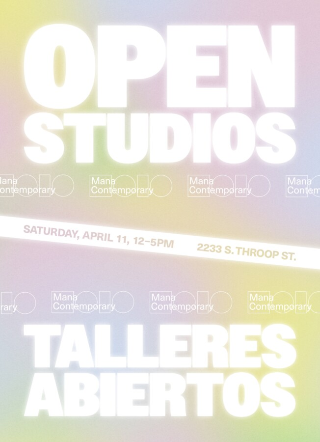

SPRING OPEN STUDIOS 2026
Mana Contemporary Chicago, in collaboration with the Monira Foundation, invites the public to celebrate the vibrant artistic community during our Spring Open Studios. This free event coincides with EXPO Chicago weekend, offering an immersive experience into Chicago’s dynamic contemporary art scene.
Join us for an unforgettable day of exploration, inspiration, and connection. Visitors will have the unique opportunity to: Tour open studios and engage directly with resident Mana Artists, view current exhibitions across the building, attend the grand opening of the Ayé Aton exhibition, enjoy additional exhibition openings throughout our different floors. -More than 90 Mana Artists will generously opening their studios spaces for us to discover their process and makings -Exciting Mana Highlights Exhibitions throughout the building -A special exhibition and activation in collaboration with Chuquimarca & Curator Xavier Robles Armas -Open Galleries – Tiger Strikes Asteroid Chicago, Purple Window Gallery
Whether you’re a collector, curator, fellow artist, or simply an art lover, this event promises a diverse range of visual experiences and meaningful conversations.
Participating artists:
Adrian Aispuro . Alex Hornero . Alice Hargrave . Alina Nazmeeva . Alonso Galue . Amanda Mulcahy . Ariadna Ginez . Bernard Friedman . Bobbye Cochran . Christine Forni & Noah Kashiani . Claire Pentecost . Cv Peterson . Dana Major . David Sami . Deirdre Fox . Delaina Doshi . Demir Mujagic . Devina Mauria-Dhawan . Eboni Onayo . Elena Pach . Erika Kristen Watt . Erin Franzinger Barrett . Frank Vega . Galina Shevchenko . Gibson Chidel . Iva Elliott . Jamie Gannon . James Jankowiak . James Simon . Jeff K%NZ . Jenny Casas . Jenny Chernansky . Jeremy Sublewski . Jonathan Michael Castillo . Josiah Ellner . Juan Baños . Kara Cobb Johnson . Karen Azarnia . Katherine Desjardins . Kelly D. Pelka . Kelly Wang . Kendra Curry-Khanna . Kent Jones . Kevin Maginnis . Khytul Abyad . Kim Basile . Laura Kina . Lindsey Hook . Linye Jiang . Lucy Baird . Madeline Pasek . Marc Benja . Martha Osornio Ruiz . Mary Griffin . Mercedes Zapata . Michelle Alexander . Michelle Reid . Michelle Rodriguez . Mickey Alice Kwapis . Mmm . Monika Niwelinska . Natalie Clark . Nick Jackson . Odeth Reinoso Sanchez . Olea Nova . Pedro Montilla . Project 1952 . Purple Window Gallery . Rajee Aryal . Reevah Agarwaal . Rory Monaghan . Sam Hensley . Samantha Turner . Samuel Schwindt . Sara Condo . Sara Pooley . Sarita Garcia . Sarah Isela Aguilar . Saul Aguirre . Shaquita Reed . Shanna Zentner . Shawn Michael Lucas . Sheri Rush . Steph Murray . Sylvester Robinson . The Filipino American Society of Chicago . Tiger Strikes Asteroid . Tim Samuelson . Tom Denlinger . Tom Van Eynde . Vida Sačić . Yasmin Spiro
EXHIBITIONS
Vestíbulo
Ayé Aton